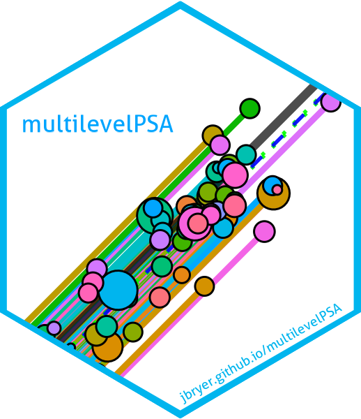
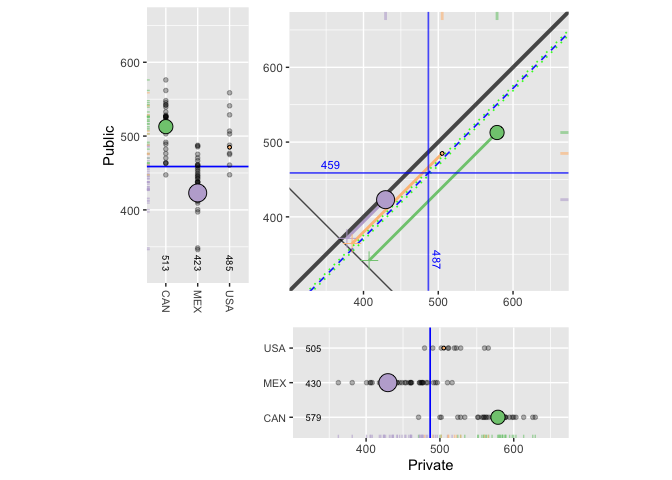

 multilevelPSA - An R package for estimating and visualizing multilevel propensity score models
Resources:
- This package was developed for my dissertation, A National Study Comparing Charter and Traditional Public Schools Using Propensity Score Analysis. Analysis scripts and manuscript are available on Github here: https://github.com/jbryer/dissertation.
- Applied Propensity Score Analysis with R book and R package.
Abstract
As can be seen from the recent Special Issue of MBR on propensity score analysis (PSA) methods, the use of PSA has gained increasing popularity for estimating causal effects in observational studies. However, PSA use with multilevel or clustered data has been limited, and to date there seems to have been no development of specialized graphics for such data. This paper introduces the multilevelPSA (http://multilevelPSA.r-forge.r-project.org) package for R that provides cluster-based functions for estimating propensity scores as well as graphics to exhibit results for multilevel data. This work extends to the multilevel case the framework for visualizing propensity score analysis introduced by Helmreich and Pruzek (2009). International data from the Programme for International Student Assessment (Organization for Economic Co-operation and Development, 2009) are comprehensively examined to compare private with public schools on reading, mathematics, and science outcomes after adjusting for covariate differences in the multilevel context.
Particularly for analyses of large data sets, focusing on statistical significance is limiting. As can readily be seen, overall results favor “private” over “public” schools, at least for end of secondary school math achievement. But the graphics provide a more nuanced understanding of the nature and magnitude of adjusted differences for countries. Furthermore, the graphics are readily interpreted by a nontechnical audience. Broadly speaking, it is seen that modern graphics can enhance and extend conventional numerical summaries by focusing on details of what data have to say for multilevel comparisons of many countries based on propensity score methods.
Citation
citation(package = 'multilevelPSA')
#> To cite multilevelPSA in publications, please use:
#>
#> Bryer, J.M. & Pruzek, R.M. (2011). An international comparison of
#> private and public schools using multilevel propensity score methods
#> and graphics (Abstract). Multivariate Behavior Research 46, 1011-1011
#>
#> A BibTeX entry for LaTeX users is
#>
#> @Article{,
#> author = {Jason M. Bryer and Robert M. Pruzek},
#> title = {An international comparison of private and public schools using multilevel propensity score methods and graphics (Abstract)},
#> year = {2011},
#> number = {46},
#> pages = {1010--1011},
#> journal = {Multivariate Behavior Research},
#> }Getting Started
The following example demonstrates how to get started the multilevelPSA package. A more detailed explaination is available in the package vignette (vignette(topic = 'multilevelPSA')).
# Install from CRAN
install.packages('multilevelPSA')
# Or install the package from Github
remotes::install_github('multilevelPSA', 'jbryer')Example estimating the effects of private versus public schools in North America using the 2009 Programme of International Student Assessment.
# Load the packages
library(multilevelPSA)
library(party)
# Load the Programme for International Student Assessment data
data("pisana", package = 'multilevelPSA')
data("pisa.psa.cols", package = 'multilevelPSA')
# Estimate the propensity scores
mlctree <- mlpsa.ctree(pisana[,c('CNT','PUBPRIV',pisa.psa.cols)],
formula = PUBPRIV ~ .,
level2 = 'CNT')
# Get the strata
student.party <- getStrata(mlctree, pisana, level2 = 'CNT')
# Create a total math score as the average of the five imputed scores
student.party$mathscore <- apply(student.party[,paste0('PV', 1:5, 'MATH')], 1, sum) / 5
# Estimate the causal effects
results.psa.math <- mlpsa(response=student.party$mathscore,
treatment=student.party$PUBPRIV,
strata=student.party$strata,
level2=student.party$CNT, minN=5)
# Plot the results
plot(results.psa.math)